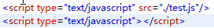

1、JavaScript发展历史
<1>95年网景(Netscape)个公司推出LiveScript。在此之前，没有所谓的前端技术。所有的服务都需要由服务器端进行操作。当时的目的是同时在客户端和服务器端使用。
<2>由Netscape(网景)公司联合SUN公司完善LiveScript。此时，Netscape公司将LiveScript更名为JavaScript。目的是利用Java语言的流行。
<3>微软在推出IE3.0时，使用了JavaScript的克隆版本，Jscript。
<4>此时，JavaScript拥有多个版本：版本不统一的问题出现！
<5>97年JavaScript1.1由欧洲计算机制造商协会定义。此举，只为JavaScript语言定制统一的语言版本。该全新版本的推出，更名为ECMAScript。该版本由Netscape、Sun、微软共同定义。
<6>微软的IE浏览器产品的推广，间接推广了JavaScript。（JavaScript脚本语言已经成为浏览器的必要组建、JavaScript语言的版本问题越加突出）。
<7>JavaScritp语言的版本不统一问题至今仍为解决！
2、JavaScript的核心组成部分
* ECMAScript
ECMAScript是一种脚本语言的标准，ECMA-262标准。
该标准不仅限于JavaScript语言使用，例如ActionScript语言中的标准也为ECMA-262标准。
ECMAScript描述了以下内容：语法、类型、语句、关键字、保留字、运算符和对象。
* BOM：全称：Browser Object Model，译为浏览器对象模型。
* DOM：全称：Document Object Model，译为文档对象模型。
3、script标签属性说明：
type：text/javascript，指定使用的脚本语言。
language：JavaScript，也是指定使用的脚本语言，弃用！
src：载入外部JavaScript脚本代码（路径可以是绝对路径和相对路径）。


4、ECMAScript入门
* 区分大小写：与Java一样。变量、函数名、运算符以及其他一切东西都是区分大小写的。
* 变量是弱类型的：与Java不一样。ECMAScript中的变量无特定的类型，定义变量时只用var运算符，可以将它初始化为任意的类型。变量的类型取决于给变量赋值的内容。
* 每行结尾的分号可有可无：与Java不一样。如果一条语句的结尾没有分号表明结束的话，前提是这样没有破坏代码的语义。最好的编码习惯是加入分号。
* 注释：与Java一样。支持//、/**/这几种常见的注释方式。
* {}括号表明代码块：与Java一样。
5、BOM简介
浏览器内置对象的介绍

* Navigator对象：浏览器对象，包含了正在使用的Navigator的版本信息。反映了当前使用的浏览器的资料。JavaScript 客户端运行时刻引擎自动创建navigator对象。
* Window对象：表示的是浏览器窗口。最顶层的对象, window的属性对应于整个窗口。
* Document对象：文档对象是JavaScript中window和frames对象的一个属性,是显示于窗口或框架内的一个文档。描述当前窗口或指定窗口对象的文档。它包含了文档从<head>到</body>的内容。
* Links对象：是一个数组，包含了文档中所有连接标记（包含href属性的<a>标记和<map>标记段里的<area>标记），按照在文档中的次序，从 0 开始给每个连接标记定义了一个下标。
* Archors对象：是一个数组，包含了文档中所有锚标记（包含name属性的<a>标记），按照在文档中的次序，从 0 开始给每个锚标记定义了一个下标。
* Forms对象：是一个数组，包含了文档中所有的表单（<form>）。要引用单个表单，可以用 document.forms[x]，但是一般来说，人们都会这样做：在<form>标记中加上“name=”...“”属性，那么直接用“document.<表单名>”就可以引用了。
* Images对象：图片对象 document.images[] 是一个数组，包含了文档中所有的图片（<img>）。
* Frame 对象：是 window 对象。用最容易理解的话说，每一个HTML 文件占用一个 window 对象， 包括定义框架的网页（“框架网页”）。
* Location对象：地址对象 它描述的是某一个窗口对象所打开的地址。window.location = “链接地址”;
* History对象：历史对象包含了用户已浏览的 URL 的信息，是指历史对象指浏览器的浏览历史。back() 后退，跟按下“后退”键是等效的。forward()前进，跟按下“前进”键是等效的。
* Window对象：表示的是浏览器窗口。最顶层的对象, window的属性对应于整个窗口。
* Document对象：文档对象是JavaScript中window和frames对象的一个属性,是显示于窗口或框架内的一个文档。描述当前窗口或指定窗口对象的文档。它包含了文档从<head>到</body>的内容。
* Links对象：是一个数组，包含了文档中所有连接标记（包含href属性的<a>标记和<map>标记段里的<area>标记），按照在文档中的次序，从 0 开始给每个连接标记定义了一个下标。
* Archors对象：是一个数组，包含了文档中所有锚标记（包含name属性的<a>标记），按照在文档中的次序，从 0 开始给每个锚标记定义了一个下标。
* Forms对象：是一个数组，包含了文档中所有的表单（<form>）。要引用单个表单，可以用 document.forms[x]，但是一般来说，人们都会这样做：在<form>标记中加上“name=”...“”属性，那么直接用“document.<表单名>”就可以引用了。
* Images对象：图片对象 document.images[] 是一个数组，包含了文档中所有的图片（<img>）。
* Frame 对象：是 window 对象。用最容易理解的话说，每一个HTML 文件占用一个 window 对象， 包括定义框架的网页（“框架网页”）。
* Location对象：地址对象 它描述的是某一个窗口对象所打开的地址。window.location = “链接地址”;
* History对象：历史对象包含了用户已浏览的 URL 的信息，是指历史对象指浏览器的浏览历史。back() 后退，跟按下“后退”键是等效的。forward()前进，跟按下“前进”键是等效的。
6、浏览器内置对象的特点：
* 每个对象有它自己的属性、方法和事件。
* 对象的属性是反应该对象某些特定的性质的。
例如：字符串的长度、图像的长宽等等。
* 对象的方法能对该对象做一些事情。
例如：表单的“提交”等等。
* 对象的事件能响应发生在对象上的事情。
例如：提交表单产生表单的“提交事件”。
7、DOM简介
<1>DOM的特点
* DOM可以以一种独立于平台和语言的方式访问和修改一个文档的内容和结构。换句话说，这是表示和处理一个HTML或XML文档的常用方法。
* DOM可以用于任何编程语言。
* DOM技术使得用户页面可以动态地变化，如可以动态地显示或隐藏一个元素，改变它们的属性，增加一个元素等，DOM技术使得页面的交互性大大地增强。
* DOM实际上是以面向对象方式描述的文档模型。可以把DOM认为是页面上数据和结构的一个树形表示，不过页面当然可能并不是以这种树的方式具体实现。
* DOM可被JavaScript用来读取、改变HTML、XHTML以及XML文档。
* DOM被分为不同的部分（核心、XML及HTML）和级别（DOM Level 1/2/3）。
<2>DOM规范级别
* DOM Level1
DOM Level1是W3C于1998年10月提出的第一个正式的W3C DOM规范。它由DOM Core和DOM HTML两个模块构成。前者提供了基于XML的文档结构的结构图，以方便访问和操作文档的任意部分；后者提供了一些HTML专用的对象和方法，从而扩展了DOM Core。
DOM Level1主要目标是合理规划文档的结构。它的最大缺陷就是忽略了事件模型、其中包括NN2和IE3中最简单的事件模型。
* DOM Level2
DOM Level2基于DOM Level1并扩展了DOM Level1，添加了鼠标和用户界面事件、范围、遍历（重复执行DOM文档的方法）、XML命名空间、文本范围、检查文档层次的方法等新概念，并通过对象接口添加了对CSS的支持。同时引入几个新模块，用以处理新的接口类型，包括：
DOM视图——描述追踪文件的各种视图（即CSS样式化之前和CSS样式化之后的文档）的接口；
DOM事件——描述事件的接口。
DOM样式表——描述处理基于CSS样式的接口；
DOM遍历和范围——描述遍历和操作文档树的接口。
<3>DOM Level3
DOM Level3引入了以统一的方式载入和保存文档的方法（包含在新模块DOM Load and save中）以及验证文档（DOM Validation）的方法，从而进一步扩展了W3C DOM规范。
在DOM Level3中，DOM Core被扩展为支持所有的XML1.0特性，包括XML Infoset、XPath和XML Base，从而改善了DOM对XML的支持。
<4>DOM Level0
DOM Level0不是W3C标准。而仅仅是对在Netscape Navigator 3.0和Microsoft Internet Explorer3.0中的等价功能性的一种定义。DOM Level0其实就是定义的一些Document对象的属性和方法。
8、JavaScript基础
<1>函数通常都会有返回值，如果某个函数没有显示的返回值，我们就会默认它的返回值是undefined。
<2>一个函数只能有一个返回值，如果我们需要同时返回多个值，可以考虑将其放进一个数组里，以数组元素的形式返回。
<3>JavaScript中可以用一个var语句定义两个或多个变量：var test1=“hello”，test2=“world”。
<4>通过构造函数的方法，创建函数。例如：var add = new Function('a','b','return a+b');alert(add(1,3));